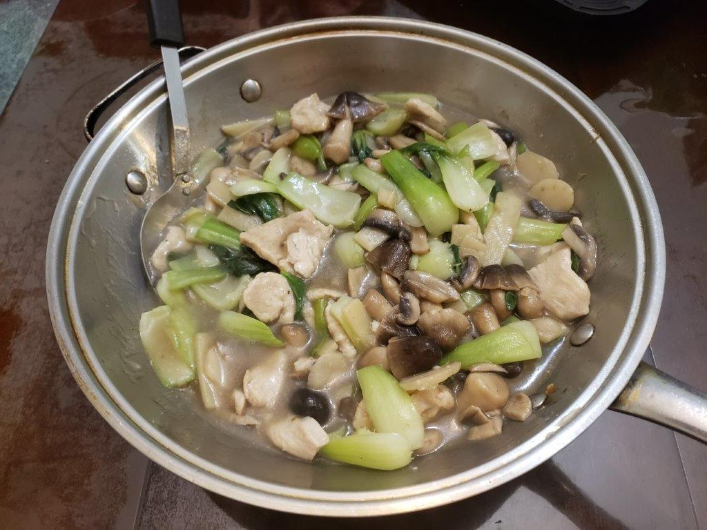

Moo Goo Gai Pan (Mushroom Chicken Stir Fry)

Ingredients:
Marinade:
- 1 lb Chicken, thinly sliced
- 3 tbsp Water
- 1 tsp Canola oil
- 2 tsp Cornstarch
- 1/4 tsp Salt
- 1/8 tsp White pepper
Other Ingredients:
- 3 tbsp Canola oil
- 6 slices Ginger
- 2 Scallions, white parts only, sliced at an angle into 1/2 inch pieces
- 2 cloves Garlic, thinly sliced
- 8 oz Button mushrooms, sliced
- 8 oz Straw mushrooms, canned, drained
- 8 oz Bamboo shoots, drained
- 8 oz Water chestnuts, drained
- 4 - 5 cups Bok choy, cut into 1 x 2 inch rectangles
- 1 tbsp Shaoxing wine
- 1 cup Chicken stock
- 1 tsp Salt
- 1/8 tsp White pepper
- 1/4 tsp Sugar
- 1 tsp Oyster sauce
- 1/2 tsp Sesame oil
- 1 1/2 tbsp Cornstarch mixed with 2 tbsp Water
Instructions:
- In a sealable container, massage 3 tbsp water into the chicken, until the chicken has absorbed the water. Then massage the rest of the marinade ingredients into the chicken. Let rest for 20 minutes to overnight.
- Heat 2 tbsp oil in a wok over high heat, coating the perimeter of the wok with the oil. Spread the chicken in one layer around the wok and sear for 20 seconds. Flip the chicken and sear for another 20 seconds. Remove chicken from the wok and reserve.
- Add another tbsp of oil to the wok along with the ginger. After 10 seconds, add in the scallions and garlic and stir fry for 15 seconds. Add the mushrooms, bamboo shoots, and water chestnuts and stir fry for 30 more seconds.
- Add the bok choy and then the shaoxing wine. Stir fry for about a minute or until the bok choy is begins to wilt.
- Add back in the chicken along with the chicken stock. While the mixture is returning to a boil, add in the salt, white pepper, sugar, oyster sauce, and sesame oil. Stir until well combined.
- Quickly stir the cornstarch slurry and add it the wok slowly while stirring the wok constantly. Once the sauce has reached its desired consistency, about a minute, remove from heat and serve.